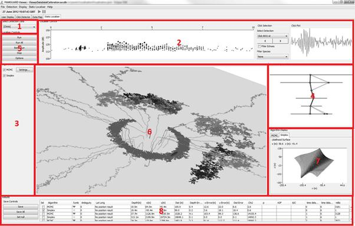
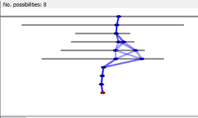
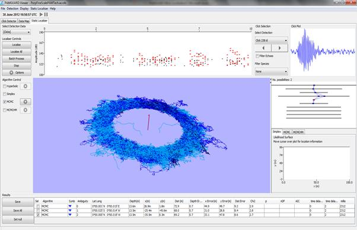
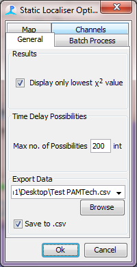

Figure 14. The MEAL localiser should initially look something like this.
Add the MEAL localiser and localise porpoise clicks. Batch process the entire dataset and view in a spread sheet. Create a graph of the dive profile.
Now we have detected and classified our porpoise clicks we can begin to localise. The MEAL localiser module is currently still under development and can only be accessed in PAMGUARD viewer. This partly due to the fact that localisation is computationally intensive and so currently not suitable for real time use.
For this exercise we are going to use some data already prepared so that all participants are using the same classification settings etc. Start a new instance of PAMGUARD viewer mode, open the database named PorpFineScalePAMTech in the Exercise 3 folder and select the corresponding binary files in the folder named 20120630.
Go to File > Add Modules > Loclaisers > MEAL localiser. This will add the MEAL localiser to viewer mode. As the module is still in development there are a few minor issues which need to be sorted out when adding the module. Your instructor will guide you through these.
You should end up with a new localiser tab which looks like.
Figure 14. The MEAL localiser should initially look something like this.
For the rest of this exercise we will divide the localiser into panels and refer to each panel by the names given below.

|
1) Data block selection menu
2) Click bt display 3) Algorithm selection 4) Detection match |
5) Localiser controls
6) Map 7) Algorithm display 8) Results |
The top Click bt display panel contains a miniature bearing time display however since we did not group any of our clicks there is no bearing information to display. Right click on the display, select Bearing Amplitude Options and in the dialog box select Amplitude.

Figure 15. Because we did not group clicks we will need to view them on an amplitude time rather than bearing time display.
The Click bt display panel should now look similar to your main Click Detector bearing time display. Select Porpoise in the Filter Species box. This tells the localiser to only use classified porpoise clicks in calculations.
The Map panel displays localisation results and shows the hydrophone array. Right click to drag the map, left click to rotate and use the mouse wheel to zoom in and out. Your display should now look something like.

Figure 16. Use the mouse left click, right click and wheel to manipulate the 3D map.
Select a porpoise click. You should notice the Detection match panel changing. The Detection match panel contains information on the number of possible time delay combinations. The red circle represents the selected detection, in this case whichever click you have selected in the Click bt Display. This selected detection is your primary detection. We need to find this detection on other hydrophones; to do this we look in a time window before and after the time of the primary detection, represented in the panle by a grey line. Each hydrophone will have a different time window depending on how far it is away from the primary hydrophone. It is possible that a time window will contain more than one detection and for species such as a harbour porpoise, which has indistinguishable clicks, there is a an equal likelihood that any one click within the time window could be the primary click we are looking for. The blue dots represent the possible matches to the primary click within the time windows. Each blue line represents a possible combination of detections of which only one will contain only detections which correspond to the primary detection. The number of possibilities is shown at the top of the window.
|  |
Reasons for multiple time delay possibilities
-echoes -multiple animals -rapid vocalisations -widely spaced elements |
Figure 17. The number of possible time delay combinations is displayed in the Detection match panel. Lines represent each combination and the red dot represents the currently selected detection.
For this exercise we are only going to use the vertical component of the array to determine depth and range. This will reduce the number of time delay possibilities and give us information on depth and range. In the localiser controls panel select Options and in the Channels tab deselect channels 6, 7, 8 and 9. In the Map tab make sure that Use high res. Plot symbols is selected. Click OK.

Figure 18. For this exercise we only need channels 0-5 selected.
We are now going to perform our first localisation. Select MCMC in the Algorithm selection panel. You should see the Localise, Localise All, and Stop buttons becoming enabled. Find a click which contains corresponding detections on most other channels and has more than one time delay possibility. In the detection match panel such a click should look something like...

Figure 19. Select a click which has time delay possibilities roughly similar to this.
First we are going to localise only one combination. Click the Localise Button.

Figure 20. MCMC produces a circular probability distribution. This is exactly what would be expected from a linear array.
You should notice a circular 'cloud' appear on the map. This cloud corresponds to the probability distribution of the porpoises' location calculated by the MCMC algorithm. The cloud is circular because a linear array only allows us to determine depth and range.

Figure 21. Using the map you can view the circle side on. Note it has a well-defined depth.
Align the map horizontally and you will see the circle has well defined depth. The range corresponds to the radius of the circle. The ability of MCMC to automatically determine these distributions is one of its primary strengths.
You will notice that the results panel contains summary information on the position of the animal including its depth, range and corresponding errors.
Now we are going to localise all possible combinations of time delays and by doing so we can check which combination is correct. Localise by pressing Localise All. The localiser will now localise all the possible combinations. Once the localiser has stopped your screen should look something like...

Figure 22. You can localise all possible time delay combination for a given detection. The result which has the lowest chi squared value is also likely the correct combination of detections.
We now have multiple clouds, some which have the expected circular shape and others which do not. Instantly, just by eye, you can see some combinations produce better results than others. Click on one of the clouds. It will turn red along with its corresponding time delay combination in the Detection match panel. Clicking on a combination or map symbol will also highlight the corresponding localisation result in the Results panel. The algorithm display panel has an MCMC tab. If selected this will show you a graph of chi squared versus 'jump iteration'.

The quicker this graph reaches a low chi squared value the better the time delay information has fit the algorithm. You can also use this panel to highlight corresponding detection match lines and plot symbols; it is a handy way of picking the combination which has the lowest final chi squared value.

Figure 23. You can select 3D shapes on the map and time delay possibilities in the detection match panel.
In the results panel the result with lowest chi squared value will be ticked. This result is the best fit to the algorithm which likely indicates it was calculated from the correct combination of time delays. You can save this result by pressing Save.
You have now learned the basics of the MEAL localiser. It is vital you familiarise yourself with this so take a while to localise other clicks.
The Simplex algorithm is similar to MCMC however does not show true probability distributions. It is, however much faster. Select Simplex in the Algorithm selection panel and compare it to the MCMC algorithm by localising a few more clicks. Pay attention to the millis column in the results table. This shows the computational time of each algorithm.

Figure 24. Simplex is much faster than MCMC but doesn't perform quite as well.
In this section we will batch process the entire dataset. In doing so we will localise every porpoise click and save to a database. To save time we will be using the Simplex algorithm, however analysis with MCMC will produce better results. Make sure Simplex is the only algorithm selected in the Algorithm selection panel. Select Batch Process and tick the Batch Localise box and ensure All Data is selected in the Data Options drop down menu. Next select Settings...

In the Batch Process Tab select Use a primary hydrophone box and set the Primary Hydrophone as 4.Using a primary hydrophone means that only clicks on one channel are processed. This ensures that localisations are not repeated across different channels. Set the Min no. of time delays to 4. Min. number of delays specifies the minimum number of channels which must have a click detected. Note delays are related to channels by 0.5+sqrt(1+2*TD)/2 were TD is the number of time delays. There is no point in localising a click which was only detected on one other channel, as this simply gives you one time delay and hence a hyperbolic cone of infinite size on which a porpoise may be located i.e. not much localisation information.
Next select the General tab and ensure that Display only lowest chi2 value is selected. This means that only the localisation result with the lowest chi squared value will be saved from clicks which have multiple possible combinations.

In the General tab you can export data to a spread sheet. This is not necessary as data is automatically saved to a database, however is convenient in many cases to quickly open data in excel. Tick Save to.csv and specify a path using Browse. Click OK.
Now click Start and wait until the data processing is complete.
Once the batch processing has finished open the spread sheet you specified in section 3.4. Using Microsoft Excel or equivalent select the chi column and filter out any values above 3. Now selected the z column and plot a graph of results with time. You should end up with something which looks roughly like....

Figure 25. Your results with the Simplex algorithm should look something like this graph.
Well done. You have calculated a porpoise dive profile from raw .wav data. MCMC produces slightly better result. If you have time you can try and replicate these by batch processing with MCMC.

Figure 26. MCMC captures more of the dive.